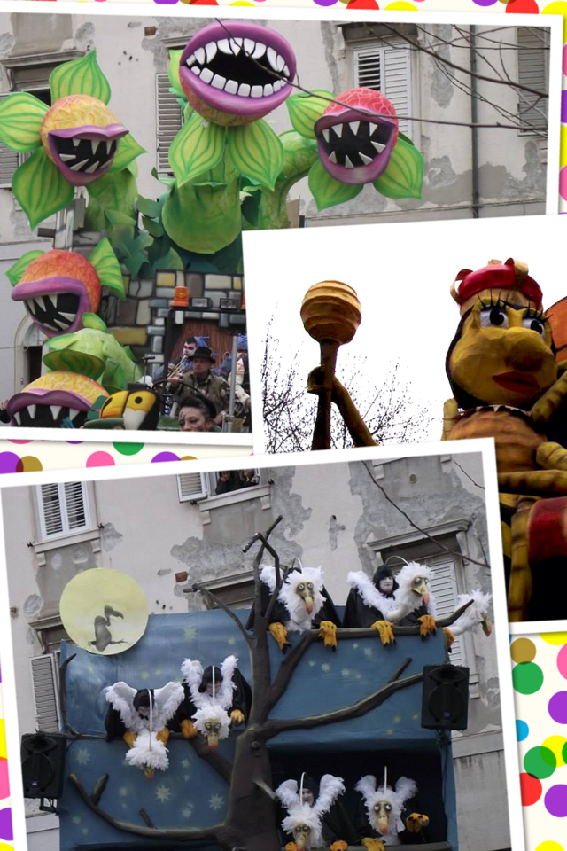

Muggia, a small town in the outskirts of Trieste, is well known for its Carnival parade. For the past 61 years, 8 teams have competed to win the contest, and every year they attract thousands of people that patiently await at the sides of the main street to see the dances and jokes of the participants in disguise. It is a fun event, with music, dances and good food. And, as usual, it is a chance to meet friends and spend some cheerful moments together.